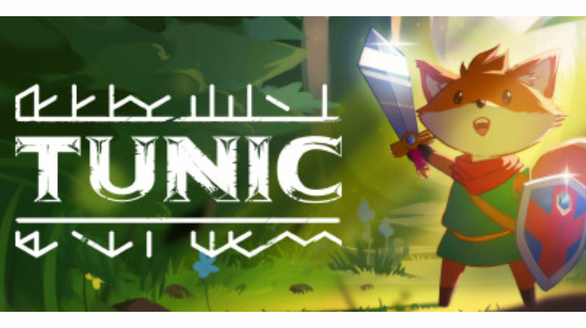

Nouvelle Vidéo de Tunic
TheGreatReview
VoidyKit
Guide Complet pour Progresser dans le Jeu Tunic
1. Premiers Pas
a. Introduction au Jeu
Objectif Principal : Explorer un monde fantastique, résoudre des énigmes, et affronter des ennemis pour découvrir les secrets de Tunic.
Système de Progression : Acquérez des objets, améliorez vos compétences et déverrouillez de nouvelles zones en progressant.
b. Maîtriser les Contrôles
Déplacement et Attaque : Utilisez les touches pour vous déplacer, attaquer, et interagir avec l'environnement.
Inventaire et Équipements : Apprenez à gérer votre inventaire et à utiliser vos équipements pour survivre et progresser.
2. Exploration et Cartes
a. Explorer le Monde
Zones Initiales : Commencez par explorer les zones de départ pour vous familiariser avec les mécaniques de jeu.
Secrets Cachés : Recherchez des chemins alternatifs, des cavernes secrètes et des objets cachés pour obtenir des bonus et des améliorations.
b. Cartes et Navigation
Utilisation des Cartes : Utilisez les cartes du jeu pour naviguer et trouver des points d’intérêt.
Repères Visuels : Faites attention aux repères visuels et aux indices dans le décor pour ne pas vous perdre.
3. Énigmes et Objets
a. Résoudre les Énigmes
Observation : Soyez attentif aux détails et aux indices dans votre environnement pour résoudre les énigmes.
Interaction : Interagissez avec des objets, des mécanismes et des éléments de l’environnement pour progresser dans le jeu.
b. Utilisation des Objets
Collecte d’Objets : Ramassez des objets importants comme des clés, des potions et des équipements pour vous aider dans vos aventures.
Améliorations : Utilisez des objets pour améliorer vos compétences et débloquer de nouvelles capacités.
4. Combats et Stratégies
a. Combat Contre les Ennemis
Apprendre les Patterns : Étudiez les comportements des ennemis pour anticiper leurs attaques et éviter les dégâts.
Utilisation des Capacités : Utilisez vos capacités spéciales et vos objets pour vaincre les ennemis plus efficacement.
b. Stratégies de Combat
Positionnement : Gardez une bonne position pendant les combats pour éviter les attaques et maximiser vos propres attaques.
Gestion des Ressources : Gérez vos potions et équipements pour maintenir votre survie lors des combats difficiles.
5. Développement du Personnage
a. Amélioration des Compétences
Points de Compétence : Investissez dans les compétences et les améliorations pour renforcer votre personnage.
Équipements : Acquérez et améliorez vos équipements pour augmenter vos capacités de combat et de survie.
b. Interactions avec les PNJ
Dialogue et Quêtes : Parlez aux PNJ pour obtenir des quêtes secondaires, des informations et des objets spéciaux.
Récompenses : Complétez les quêtes pour obtenir des récompenses qui vous aideront dans votre aventure.
6. Stratégies de Long Terme
a. Planification des Quêtes
Choix des Quêtes : Planifiez les quêtes en fonction de votre niveau de compétence et des objets dont vous disposez.
Objectifs à Long Terme : Définissez des objectifs à long terme pour structurer votre progression dans le jeu.
b. Adaptation aux Changements
Changements dans le Jeu : Adaptez-vous aux nouvelles mécaniques et aux défis croissants au fur et à mesure que vous progressez.
Révision des Stratégies : Ajustez vos stratégies en fonction des nouveaux défis et des informations acquises.
7. Amélioration Continue
a. Analyse des Échecs et Réussites
Évaluation des Performances : Analysez vos échecs et réussites pour identifier les domaines à améliorer.
Révisions des Techniques : Revoyez vos techniques de jeu pour optimiser votre performance.
b. Pratique et Apprentissage
Entraînement : Continuez à pratiquer pour améliorer vos compétences de combat et de résolution d’énigmes.
Ressources Complémentaires : Consultez des guides et des tutoriels pour apprendre des techniques avancées et des stratégies spécifiques.